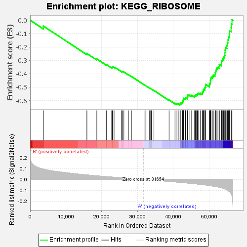
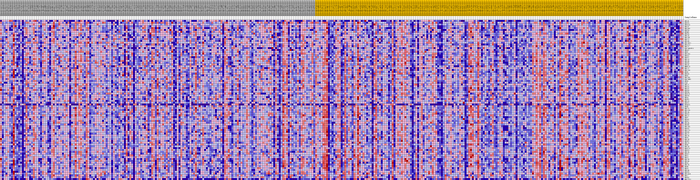
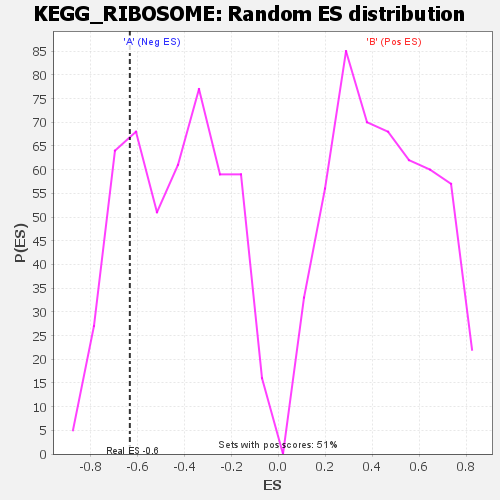

| | | Dataset | my.my.cls#B_versus_A.my.cls#B_versus_A_repos |
| Phenotype | my.cls#B_versus_A_repos |
| Upregulated in class | A |
| GeneSet | KEGG_RIBOSOME |
| Enrichment Score (ES) | -0.63271236 |
| Normalized Enrichment Score (NES) | -1.4311453 |
| Nominal p-value | 0.2258727 |
| FDR q-value | 0.49547154 |
| FWER p-Value | 0.815 |
Table: GSEA Results Summary

Fig 1: Enrichment plot: KEGG_RIBOSOME
Profile of the Running ES Score & Positions of GeneSet Members on the Rank Ordered List
| SYMBOL | TITLE | RANK IN GENE LIST | RANK METRIC SCORE | RUNNING ES | CORE ENRICHMENT | | 1 | RPL3L | na | 3681 | 0.095 | -0.0429 | No |
| 2 | RPS25 | na | 15848 | 0.041 | -0.2484 | No |
| 3 | RPS15A | na | 18625 | 0.033 | -0.2897 | No |
| 4 | RPL37 | na | 21279 | 0.026 | -0.3306 | No |
| 5 | RPL36A | na | 22777 | 0.022 | -0.3519 | No |
| 6 | RPS26 | na | 22982 | 0.022 | -0.3504 | No |
| 7 | RPS4X | na | 23134 | 0.021 | -0.3481 | No |
| 8 | RPS16 | na | 23653 | 0.020 | -0.3526 | No |
| 9 | RPL10 | na | 25489 | 0.015 | -0.3815 | No |
| 10 | RPL10L | na | 25796 | 0.014 | -0.3835 | No |
| 11 | RPL21 | na | 26172 | 0.014 | -0.3870 | No |
| 12 | RPL39 | na | 27425 | 0.010 | -0.4067 | No |
| 13 | RPL26L1 | na | 28278 | 0.008 | -0.4199 | No |
| 14 | RPL37A | na | 32056 | -0.001 | -0.4864 | No |
| 15 | RPL27 | na | 32314 | -0.002 | -0.4906 | No |
| 16 | RSL24D1P11 | na | 32355 | -0.002 | -0.4909 | No |
| 17 | UBA52 | na | 33363 | -0.004 | -0.5078 | No |
| 18 | RPS7 | na | 33527 | -0.005 | -0.5096 | No |
| 19 | RPL35A | na | 33873 | -0.005 | -0.5144 | No |
| 20 | RPS11 | na | 34569 | -0.007 | -0.5250 | No |
| 21 | RPS27 | na | 38801 | -0.018 | -0.5956 | No |
| 22 | RPL13 | na | 40457 | -0.023 | -0.6196 | No |
| 23 | RPL38 | na | 40998 | -0.024 | -0.6236 | No |
| 24 | RPS28 | na | 41354 | -0.025 | -0.6240 | No |
| 25 | RPL35 | na | 41849 | -0.027 | -0.6265 | Yes |
| 26 | MRPL13 | na | 42074 | -0.027 | -0.6241 | Yes |
| 27 | RPL22 | na | 42122 | -0.027 | -0.6185 | Yes |
| 28 | RPL23A | na | 42426 | -0.028 | -0.6173 | Yes |
| 29 | RPS5 | na | 42600 | -0.029 | -0.6136 | Yes |
| 30 | RPS10 | na | 42619 | -0.029 | -0.6071 | Yes |
| 31 | RPSA | na | 42621 | -0.029 | -0.6004 | Yes |
| 32 | RPL10A | na | 42744 | -0.029 | -0.5957 | Yes |
| 33 | RSL24D1 | na | 42751 | -0.029 | -0.5890 | Yes |
| 34 | RPS3 | na | 42853 | -0.030 | -0.5838 | Yes |
| 35 | FAU | na | 43377 | -0.031 | -0.5858 | Yes |
| 36 | RPL17 | na | 43435 | -0.031 | -0.5795 | Yes |
| 37 | RPL31 | na | 43859 | -0.033 | -0.5793 | Yes |
| 38 | RPL32 | na | 43900 | -0.033 | -0.5724 | Yes |
| 39 | RPS19 | na | 44035 | -0.033 | -0.5670 | Yes |
| 40 | RPS24 | na | 44053 | -0.033 | -0.5595 | Yes |
| 41 | RPS27L | na | 44381 | -0.034 | -0.5573 | Yes |
| 42 | RPS20 | na | 45110 | -0.036 | -0.5617 | Yes |
| 43 | RPL4 | na | 45918 | -0.039 | -0.5668 | Yes |
| 44 | RPLP1 | na | 46142 | -0.040 | -0.5613 | Yes |
| 45 | RPL15 | na | 46383 | -0.041 | -0.5560 | Yes |
| 46 | RPS21 | na | 46692 | -0.042 | -0.5517 | Yes |
| 47 | RPS4Y1 | na | 46908 | -0.043 | -0.5455 | Yes |
| 48 | RPS6 | na | 47499 | -0.045 | -0.5454 | Yes |
| 49 | RPL7A | na | 48057 | -0.047 | -0.5443 | Yes |
| 50 | RPL13A | na | 48125 | -0.047 | -0.5344 | Yes |
| 51 | RPL14 | na | 48392 | -0.048 | -0.5278 | Yes |
| 52 | RPS13 | na | 48435 | -0.049 | -0.5171 | Yes |
| 53 | RPL11 | na | 48765 | -0.050 | -0.5113 | Yes |
| 54 | RPS2 | na | 48804 | -0.050 | -0.5002 | Yes |
| 55 | RPL41 | na | 49010 | -0.051 | -0.4919 | Yes |
| 56 | RPS17 | na | 49012 | -0.051 | -0.4800 | Yes |
| 57 | RPL30 | na | 50052 | -0.056 | -0.4854 | Yes |
| 58 | RPLP0 | na | 50109 | -0.056 | -0.4733 | Yes |
| 59 | RPL18A | na | 50307 | -0.057 | -0.4635 | Yes |
| 60 | RPS15 | na | 50336 | -0.057 | -0.4508 | Yes |
| 61 | RPL27A | na | 50418 | -0.057 | -0.4388 | Yes |
| 62 | RPS18 | na | 50513 | -0.058 | -0.4269 | Yes |
| 63 | RPL12 | na | 50885 | -0.060 | -0.4195 | Yes |
| 64 | RPL24 | na | 51137 | -0.061 | -0.4096 | Yes |
| 65 | RPL6 | na | 51633 | -0.064 | -0.4034 | Yes |
| 66 | RPL18 | na | 51693 | -0.064 | -0.3893 | Yes |
| 67 | RPLP2 | na | 51841 | -0.065 | -0.3767 | Yes |
| 68 | RPL23 | na | 51973 | -0.066 | -0.3635 | Yes |
| 69 | RPS9 | na | 52227 | -0.068 | -0.3522 | Yes |
| 70 | RPL19 | na | 52739 | -0.071 | -0.3446 | Yes |
| 71 | RPS27A | na | 52846 | -0.072 | -0.3296 | Yes |
| 72 | RPS23 | na | 53409 | -0.076 | -0.3217 | Yes |
| 73 | RPL26 | na | 53430 | -0.076 | -0.3041 | Yes |
| 74 | RPS12 | na | 53665 | -0.079 | -0.2899 | Yes |
| 75 | RPL5 | na | 54013 | -0.082 | -0.2768 | Yes |
| 76 | RPL3 | na | 54348 | -0.086 | -0.2625 | Yes |
| 77 | RPL28 | na | 54389 | -0.087 | -0.2428 | Yes |
| 78 | RPL36 | na | 54433 | -0.087 | -0.2231 | Yes |
| 79 | RPL8 | na | 54518 | -0.089 | -0.2038 | Yes |
| 80 | RPL29 | na | 54927 | -0.095 | -0.1887 | Yes |
| 81 | RPS8 | na | 55096 | -0.098 | -0.1687 | Yes |
| 82 | RPL9 | na | 55229 | -0.101 | -0.1475 | Yes |
| 83 | RPL34 | na | 55373 | -0.104 | -0.1256 | Yes |
| 84 | RPS29 | na | 55620 | -0.110 | -0.1042 | Yes |
| 85 | RPL36AL | na | 55699 | -0.112 | -0.0793 | Yes |
| 86 | RPL7 | na | 56110 | -0.128 | -0.0565 | Yes |
| 87 | RPS3A | na | 56173 | -0.132 | -0.0268 | Yes |
| 88 | RPL22L1 | na | 56365 | -0.148 | 0.0045 | Yes |
Table: GSEA details [plain text format]

Fig 2: KEGG_RIBOSOME
Blue-Pink O' Gram in the Space of the Analyzed GeneSet

Fig 3: KEGG_RIBOSOME: Random ES distribution
Gene set null distribution of ES for KEGG_RIBOSOME